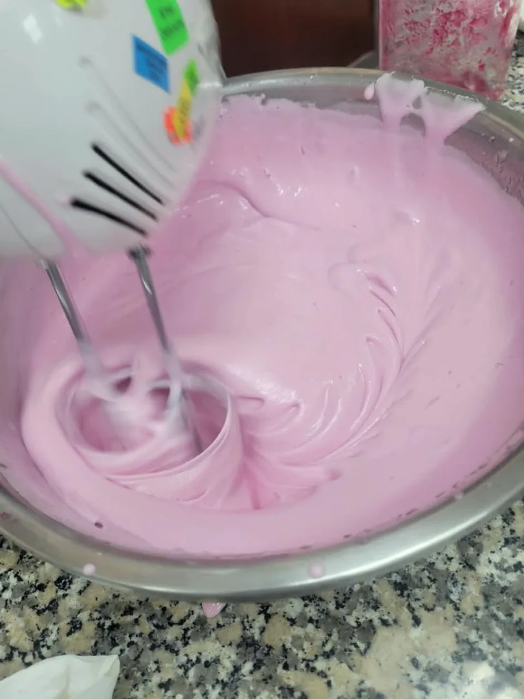
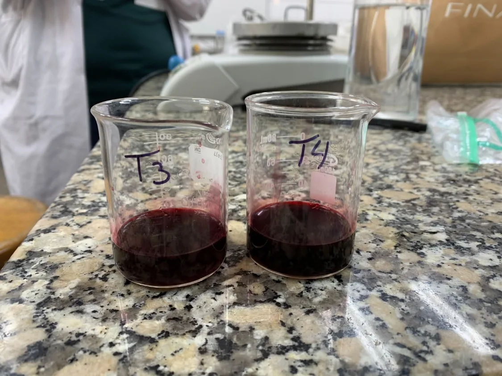
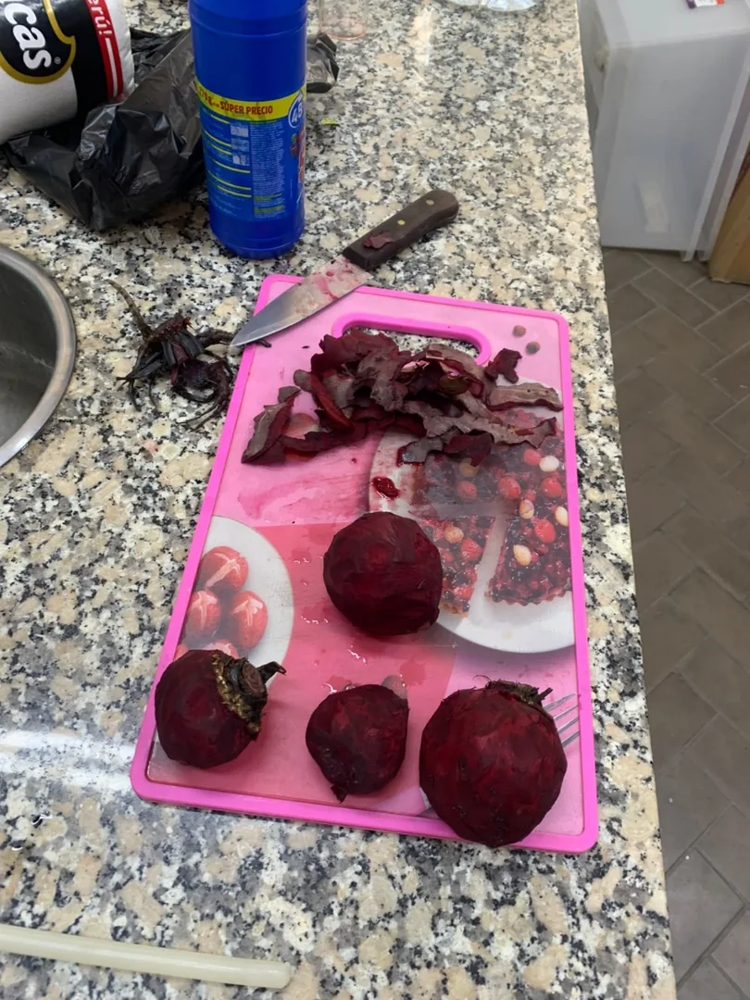
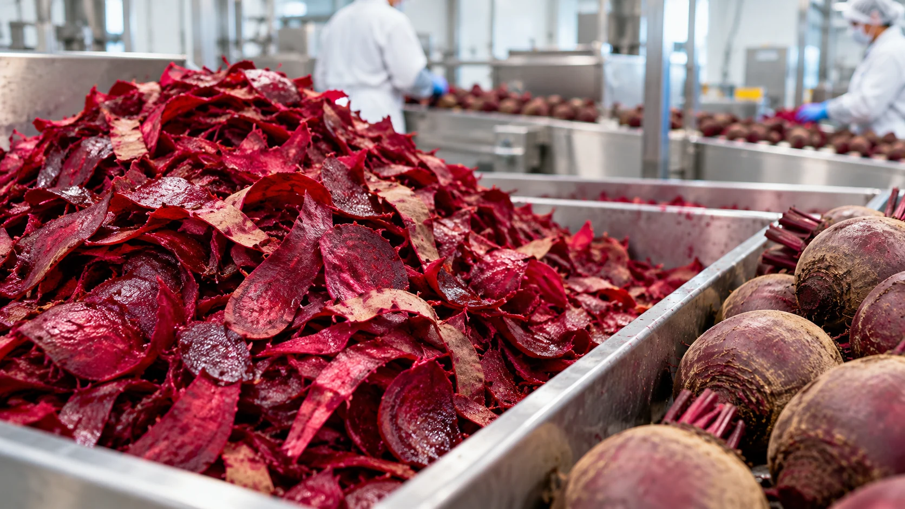

Origen vegetal
El color se obtiene de betalaínas presentes en la cáscara de betarraga (Beta vulgaris L.).
Conoce BetaNube: nuestro proyecto de malvaviscos coloreados con pigmentos naturales recuperados de la cáscara de betarraga. Una propuesta que combina confitería, ciencia y aprovechamiento de subproductos.



BetaNube transforma una pregunta sencilla en un proyecto alimentario: ¿podemos aprovechar el color de una cáscara que suele descartarse?
El color se obtiene de betalaínas presentes en la cáscara de betarraga (Beta vulgaris L.).
En lugar de desechar la cáscara obtenida durante el pelado, se aprovecha como materia prima para recuperar pigmentos.
Para la degustación se empleó el extracto T3 por disponibilidad; ello no determina cuál tratamiento recuperó más pigmento.
El pelado y procesamiento de la betarraga generan residuos vegetales. La cáscara conserva betalaínas, pigmentos naturales que en BetaNube recuperamos y aplicamos a nuestros malvaviscos. ¿Qué magnitud puede tener este subproducto?

Estimación extrapolada de un ensayo de pelado de betarraga; depende del espesor retirado y del proceso empleado.
Shakir y Vincenzi (2024)Estimación de una revisión para el conjunto de cáscaras, orujo y pulpa de betarraga. No representa exclusivamente cáscaras.
Revisión científica (2026)Reducción teórica de masa por retirada de agua, calculada con las humedades medidas. No es una medición de reducción de volumen.
Ver datos de humedad ↓El secado retira gran parte del agua del residuo y la molienda facilita la dosificación. Esto puede simplificar su almacenamiento y reducir condiciones favorables al deterioro microbiano, siempre que el material se conserve bien envasado y protegido de la humedad.
Si 1 kg de cáscara fresca conserva su materia seca y termina con 4,57 % de humedad, resultan aproximadamente 152 g de cáscara seca (cálculo teórico, no rendimiento pesado del lote).
Tras el secado, la cáscara se molió y se sometió a extracción acuosa ajustada a pH 4. Los pigmentos obtenidos permitieron desarrollar BetaNube. La degustación pública utilizó extracto T3 por disponibilidad; T4 mostró el mayor contenido estimado de betalaínas.
Cómo leer las cifras: 134 kg/t proviene de un ensayo publicado y 35–40 % se refiere a varios subproductos, no a cáscara exclusivamente. El 84,8 % es una estimación de reducción de masa calculada a partir de las humedades de BetaNube y supone conservación de materia seca. No se han cuantificado pérdidas industriales reales, reducción volumétrica ni vida útil del material seco.
Valorizamos un residuo alimentario mediante su aprovechamiento como fuente de color para confitería.
Un recorrido sencillo por las operaciones principales, desde la materia prima hasta el malvavisco.
Lavado y acondicionamiento de cáscara fresca o seca de betarraga.
Extracción con agua ajustada a pH 4 usando ácido cítrico, a 40 o 50 °C según tratamiento.
Estimación de betacianinas y betaxantinas mediante UV-Vis.
Comparación preliminar de betalaínas; en la degustación se utilizó T3 por disponibilidad de extracto.
Incorporación del extracto, elaboración del producto y evaluación del color.
Los registros fotográficos documentan el proceso realizado. El estudio de estabilidad del color durante el almacenamiento continúa pendiente de completarse.
Estas 11 fotografías provienen del registro compartido por el equipo. Selecciona una para ampliarla y conocer la etapa que documenta.
Se compararon dos estados de la cáscara —fresca y seca— y dos temperaturas de extracción —40 y 50 °C—. En los cuatro tratamientos el agua de extracción se ajustó a pH 4 con ácido cítrico. La comparación de betalaínas es preliminar. La materia prima seca y molida ofrece ventajas potenciales de manejo y almacenamiento, pero ello no equivale a demostrar mayor estabilidad del pigmento.
Las betalaínas comprenden principalmente betacianinas (rojizas-violetas) y betaxantinas (amarillentas). Sus concentraciones se estimaron mediante UV-Vis, utilizando los factores de dilución registrados para cada tratamiento.
Estimaciones de betalaínas totales derivadas de las lecturas UV-Vis y factores de dilución reportados en el ensayo.
| Tratamiento | Betacianinas (mg/L) | Betaxantinas (mg/L) | Total (mg/L) |
|---|---|---|---|
| T1 | 16,30 | 13,93 | 30,22 |
| T2 | 39,97 | 36,19 | 76,16 |
| T3 | 563,09 | 483,54 | 1046,63 |
| T4 | 726,78 | 595,83 | 1322,61 |
Resultados obtenidos anteriormente a partir de las absorbancias y diluciones suministradas por el equipo. Estimaciones espectrofotométricas sin corrección adicional de interferencias.
*bs = base seca. Para mg/g bs se asumió densidad del extracto de 1 g/mL, sin corrección de interferencias espectrales y con los datos disponibles. Las masas de cáscara utilizadas variaron entre tratamientos y se estimó densidad del extracto de 1 g/mL. Los valores no prueban por sí solos diferencias causadas exclusivamente por la temperatura o el estado de la materia prima, ni equivalen a una prueba de estabilidad.
Valores de color L*, a* y b* registrados para los malvaviscos y sus extractos. Para los extractos T3 y T4 se calcularon promedios aritméticos de tres lecturas; T1 y T2 corresponden a una lectura nueva por tratamiento. Estas mediciones no representan todavía un ensayo de estabilidad durante el almacenamiento.
| Tratamiento | n | L* | a* | b* |
|---|---|---|---|---|
| T1 · fresca, 50 °C | 2 | 69,53 | 9,66 | 6,92 |
| T2 · fresca, 40 °C | 2 | 56,34 | 18,47 | 8,79 |
| T3 · seca, 50 °C ♡ | 3 | 60,43 | 27,25 | 0,47 |
| T4 · seca, 40 °C | 3 | 70,67 | 17,39 | 3,94 |
n = lecturas disponibles. T3 fue el tratamiento usado para degustación. Los datos de T1 y T2 contienen solo dos lecturas por tratamiento.
Resultados CIELAB de T1–T4; los promedios son únicamente para T3 y T4.
| Tratamiento | n | L* | a* | b* |
|---|---|---|---|---|
| T1 · fresca, 50 °C | 1 | 40,45 | −0,05 | 1,00 |
| T2 · fresca, 40 °C | 1 | 26,79 | 5,39 | 1,59 |
| T3 · seca, 50 °C | 3 | 22,18 | 0,51 | 1,67 |
| T4 · seca, 40 °C | 3 | 22,14 | 0,57 | 1,73 |
n = número de lecturas. T3 y T4: promedio de tres registros del Excel (redondeado a dos decimales). T1 y T2: una lectura comunicada por el equipo (28/10/2026); el valor escrito como «−005» para a* de T1 se interpretó provisionalmente como −0,05. No se dispone aún de mediciones temporales de estabilidad.
La propuesta es elaborar un malvavisco con colorante natural a partir de cáscara de betarraga, utilizando para la degustación el extracto del tratamiento T3, debido a su disponibilidad.
Nota: la formulación definitiva, los alérgenos, la conservación y la vida útil deben verificarse antes de presentar una etiqueta comercial.
En un estudio de pelado se estimaron 134 kg de cáscaras por tonelada de betarraga; otra revisión presenta 35–40 % de subproductos en conjunto (cáscaras, orujo y pulpa). Estas cifras varían con el proceso y no representan residuos medidos en BetaNube. En nuestro proyecto, la cáscara se valorizó recuperando betalaínas.
Porque aprovechamos un residuo y, al reducir su humedad, la cáscara molida puede manejarse y almacenarse con mayor facilidad. En el ensayo se midió 85,48 % de humedad para la cáscara fresca y 4,57 % para la seca. Las ventajas de espacio y conservación son potenciales: requieren envase adecuado y no sustituyen una prueba de vida útil.
Son pigmentos naturales hidrosolubles presentes en diversas plantas, incluida la betarraga. Entre ellos se encuentran las betacianinas y las betaxantinas.
La cáscara es una fracción generada durante el acondicionamiento de la betarraga. El proyecto explora su valor como fuente de pigmentos antes de descartarla.
Se cuantificaron las betalaínas en los extractos y se registraron mediciones colorimétricas iniciales de los malvaviscos. El estudio de cambios de color durante almacenamiento aún no está completo.
No necesariamente. El origen natural del pigmento no demuestra por sí solo que el malvavisco tenga beneficios para la salud; es un producto de confitería.
La degustación se realizó con malvaviscos elaborados con extracto T3 por disponibilidad de pigmento. Durante la presentación, una encuesta breve puede recoger impresiones sobre color, sabor y textura. Esta página incluye una demostración visual del formulario; para recopilar respuestas de todos los visitantes, deberá conectarse a una herramienta como Google Forms.
Volver a conocer la marca ↑Shakir y Vincenzi (2024). Estimation of betalain content in beetroot peel powder. Italian Journal of Food Science, 36(1), 53–57. Reporta una extrapolación de 134,3 kg de cáscara por tonelada de raíz bajo las condiciones de pelado del estudio. Consultar artículo.
Valorization of Agri-Food Waste from Pigment-Rich Root Vegetable in Integrated EU Biorefinery Systems (2026). Foods, 15(8), 1432. Revisión que presenta un intervalo de 35–40 % de subproductos de betarraga (cáscaras, orujo y pulpa conjuntamente). Consultar revisión.
Farhan et al. (2024). Assessment of Beetroot powder as nutritional, antioxidant, and sensory evaluation in candies. Journal of Agriculture and Food Research, 15, 101023. Consultar artículo. Estudio sobre betarraga en caramelos duros; no es un estudio sobre BetaNube.
Tarasevičienė et al. (2024). Chemical Content and Color of Dried Organic Beetroot Powder Affected by Different Drying Methods. Horticulturae, 10(7), 733. Consultar artículo. Revisión de propiedades del polvo y efectos del secado, sin ser parte de las mediciones de BetaNube.
Kaur y Singh (2016). Effect of Packaging Material and Storage Conditions on Quality of Beetroot Powder. Agricultural Research Journal, 53(3), 400–406. Consultar artículo. Fundamenta la importancia del envasado para conservar la calidad.
de Avelar et al. (2019). A byproduct of uvaia processing as a natural source for coloring sugar hard-panning confections. Journal of Food Process Engineering, e13250. Consultar artículo. Antecedente sobre valorización y coloración en confitería, con un producto diferente.